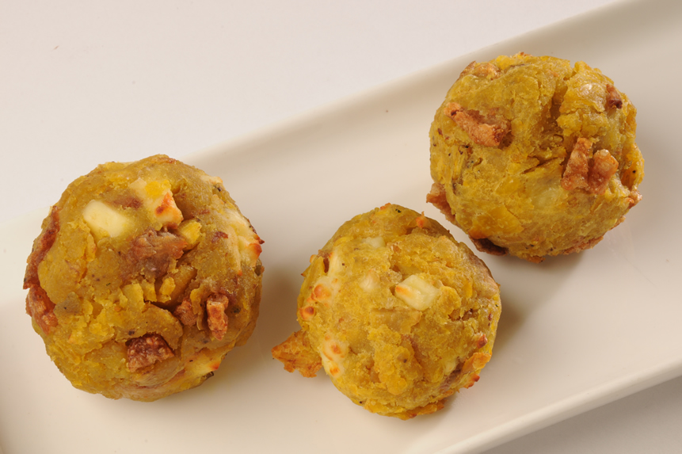

Platos principales
Los platos principales de Ecuador se caracterizan por una fuerte presencia de los mariscos y los
pescados, principalmente porque el país posee una amplia línea costera capaz de proveer al país
de un gran número de productos marinos.
El plátano, así como los diferentes maíces ecuatorianos son ingredientes indispensables dentro
de la cocina ecuatoriana. Finalmente, en cuanto a las carnes, destacan la carne de res, el
pollo, el borrego y el cuy. En lo que sigue te enumeramos los platos principales más populares
de Ecuador.
- Bolón de verde
-
Tal y como su propio nombre indica, el bolón de verde consiste en una bola del tamaño aproximado de un puño que se prepara a base de una masa hecha con plátano verde, que puede bien asarse o bien freírse previamente. Dicha masa se prepara manualmente hasta que la mezcla queda homogénea y se le añade sal y algún ingrediente adicional, como queso o carne frita.
 -
- Cangrejada
-
Para su elaboración, es necesario hervir los crustáceos previamente junto con el aliño, que se prepara con cebolla blanca, cilantro, pimienta negra, orégano, comino, sal, plátanos verdes y plátanos maduros. La cangrejada, además, suele tomarse acompañada de una ensalada que se prepara con cebolla, canguil y chifles.
-
- Ceviche
-
El ceviche, que también se puede escribir seviche, sebiche o cebiche puede ser de carne, pescado o marisco. Está considerado como el plato estrella dentro de la gastronomía ecuatoriana.
-
- Cuy asado
-
El cuy es una especie de roedor que pesa cerca de 1 kg y que se puede encontrar en la región andina de Sudamérica, especialmente en Perú, Bolivia, Ecuador y Colombia. Por ello, el cuy asado es un plato muy común también en la gastronomía de la Amazonia peruana.
Este plato suele tomarse durante días festivos o en eventos especiales e incluso existe una asociación en el país denominada Asociación de Chefs del Ecuador, la cual organiza el Festival Internacional del Cuy, en el que se exhibe la riqueza culinaria de este mamífero roedor.
-